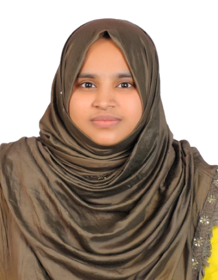

Remedial Therapy for Learning Difficulties in Tirur
Specialized support to improve academic and learning skills.
FreeWill Advanced Centre for Mental Health and Rehabilitation offers remedial therapy in Tirur, Malappuram district, as part of a multidisciplinary team that has supported families since 2015.
Who it's for
Children with learning difficulties, academic delays and specific learning challenges.
Why it helps
To overcome difficulties in reading, writing, spelling, mathematics and learning.
How we work
Individualized teaching, structured practice, multisensory learning and skill-based activities. Every plan starts with an assessment, and progress is reviewed regularly with parents.
Who you'll work with
-
Nidhuna P
Consultant Psychologist · Behaviour Therapy, Individual Counselling, Remedial Therapy
-
Linsha VP
Consultant Psychologist · Behaviour Therapy, Remedial Therapy
-

Rashida KV
Consultant Psychologist · Behaviour Therapy, Child Counselling, Remedial Therapy
-
Shamna Thasni PV
Consultant Psychologist · Behaviour Therapy, Child Counselling, Remedial Therapy
Common questions
My child has difficulty reading and writing. What can I do?
Learning difficulties can have different causes. Assessment can help identify the child's specific difficulties, after which remedial therapy or special education can provide targeted support.
How can I know which therapy my child needs?
You do not have to decide this yourself. A professional assessment can help identify your child's strengths, difficulties and appropriate therapy needs.
Will parents be involved in the therapy process?
Yes. Parent involvement is an important part of successful intervention. Therapists can guide parents on activities and strategies that can be continued at home.
How long will my child's therapy take?
There is no fixed duration. Progress depends on the child's condition, individual needs, consistency of therapy and home support. Goals are reviewed regularly.
Talk to us about remedial therapy
FreeWill Advanced Centre, Near Railway Station, Near Mini Civil Station, Near Raihan Eye Hospital, Tirur, Kerala.